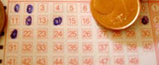
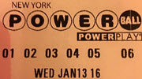
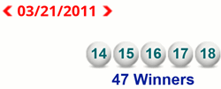
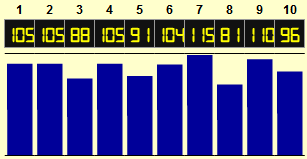

Lotteries
A lottery is a type of gambling where people buy tickets, and then win if their numbers get chosen.
A "lot" is something that happens by chance. You may have heard people say "let us decide by drawing lots" or "so that is my lot".
Rules
Different Lotteries have different rules.
Here we will use a typical lottery where the player chooses 6 different numbers out of 49.
Example:

You enter the lottery by buying a ticket and selecting your six numbers.
You choose: 1, 2, 12, 14, 20 and 21
On Saturday they draw the lottery, and the winning numbers are:
3, 12, 18, 20, 32 and 43
You matched two of the numbers (12 and 20):
- Is that enough to win you anything? No.
- Usually you must match at least three numbers to get a small prize.
- Matching four numbers gets a bigger prize,
- Matching five is even bigger.
- But if you match ALL SIX of the numbers you might win millions.
The chances of matching all 6 numbers is 1 in 13,983,816 (calculated below).
Choosing Numbers

These might win.
The numbers don't know what they are!
A Lottery is just as likely to come up "1,2,3,4,5,6" as "9,11,16,23,27,36"
Seriously!
In fact the result below really happened (Florida Fantasy 5 on 21 March 2011):

Instead of numbers they could be colors or symbols and the lottery would still work:
So it doesn't matter what numbers you choose, the chances are all the same.
More Likely Numbers?
So you have read that some numbers come up more often than others? Well of course they do, that is random chance.
The people who run lotteries have strict rules to stop the "rigging" of results. But random chance can sometimes produce strange results.
For example, using The Spinner I did 1000 spins for 10 numbers and came up with this:

Wow! 7 came up 115 times,
and 8 only 81 times.
Does this mean 7 will now come up more often, or less often? In fact it doesn't mean anything, 7 is just as likely as any number to get chosen.
Try it yourself and see what results you get.
Popular Numbers
But there is a trick! People have favorite numbers, so when popular numbers come up you are sharing the winnings with lots of people.
Birthdays are popular choices, so people choose 1-12 and 1-31 more often. Also lucky numbers.
So maybe you should choose unpopular numbers so when you DO win you get more money.
(This assumes your lottery is one where prizes are shared among winners.)
Regret
Don't choose the same numbers every week. It's a trap! If you forget a week you then worry that your numbers will come up, and this forces you to buy a ticket every week (even if you are really busy).
My advice:
Make a list of many unpopular numbers.
Choose randomly from this list every time.
Syndicates
A "Syndicate" is a group of people who all put in a little money so the group can buy lots of tickets. The chance of winning goes up, but your payout each time is less (because you are sharing).
Syndicates can be fun because they are sociable ... a way of making and keeping friendships. Plus some syndicates like to spend small winnings on everyone going out for a meal together.
And winning a smaller amount is not so bad.
Think about it ... winning Ten Million would really change your life, but One Million would also improve your life. You might prefer ten times the chance of winning one million.
Chance Of Winning the Big Prize
OK. What are the chances of you winning the big prize?
The chances of winning all 6 numbers is 1 in 13,983,816
You can use the Combinations and Permutations Calculator to work it out (use n=49, r=6, 'No' for Is Order Important? and 'No' for Is Repetition allowed?)
The actual calculation is this:
49C6 = 49!43! × 6! = 13983816
So how many times do you need to play to win?
1 Week
Suppose you play every week
The probability of a win after 1 week is:
1 13983816 = 0.0000000715...
So the probability of no win after 1 week is:
1 − 1 13983816 = 0.9999999285...
50 Years
Let's say you play for 50 years, that's 2,600 weeks.
The probability of no win over 2,600 weeks is:
(1 − 1 13983816 )2600 = 0.999814...
That means the probability of winning (after 50 Years) is: 1 − 0.999814... = 0.000186...
Still only about 0.02%
And you would have spent thousands for that small chance.
You may have had some good holidays for that money.
BUT it IS fun thinking "I just may win this week!"
Just keep it as a fun thing to do, OK?
Your Turn
Now your turn:
- Find out the rules for winning Lotto in your area.
- How many numbers do you have to choose and how many numbers do you choose from?
- Calculate the probability of winning in any one week.
- Calculate the probability of winning if you play every week for 50 years.
- How much money would you save by not playing? What can that money buy?